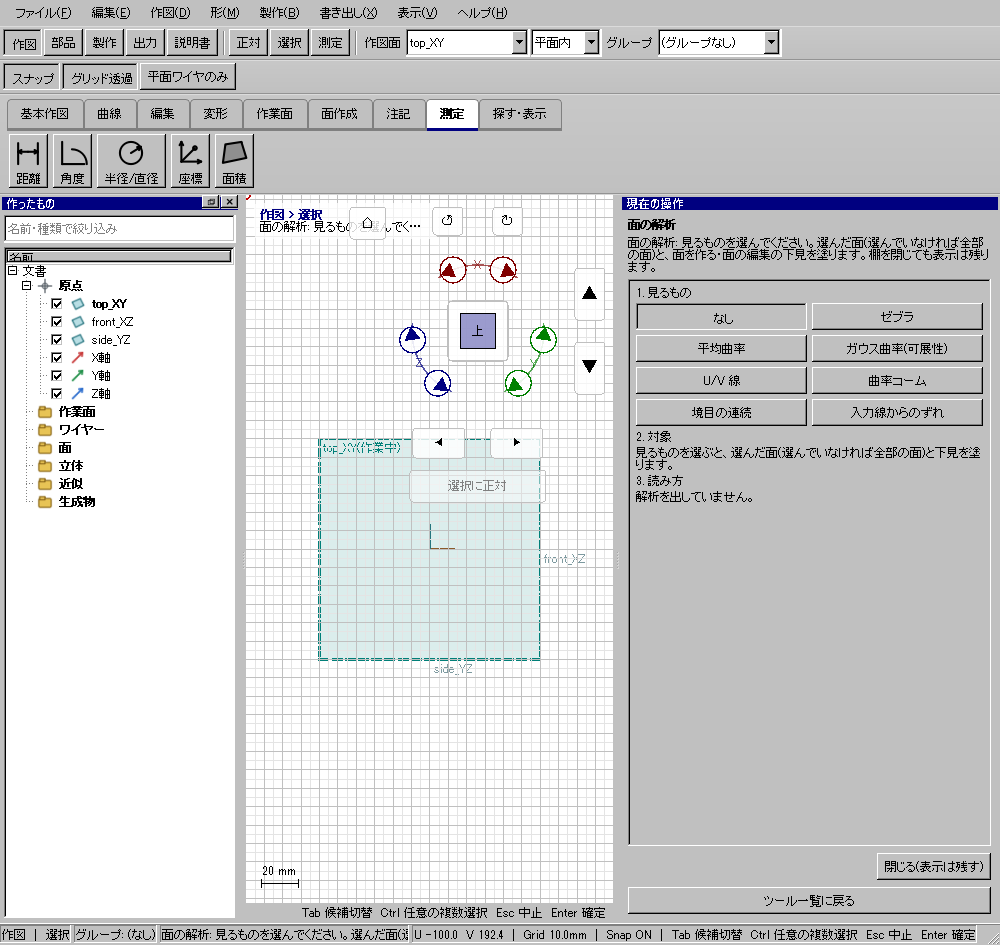
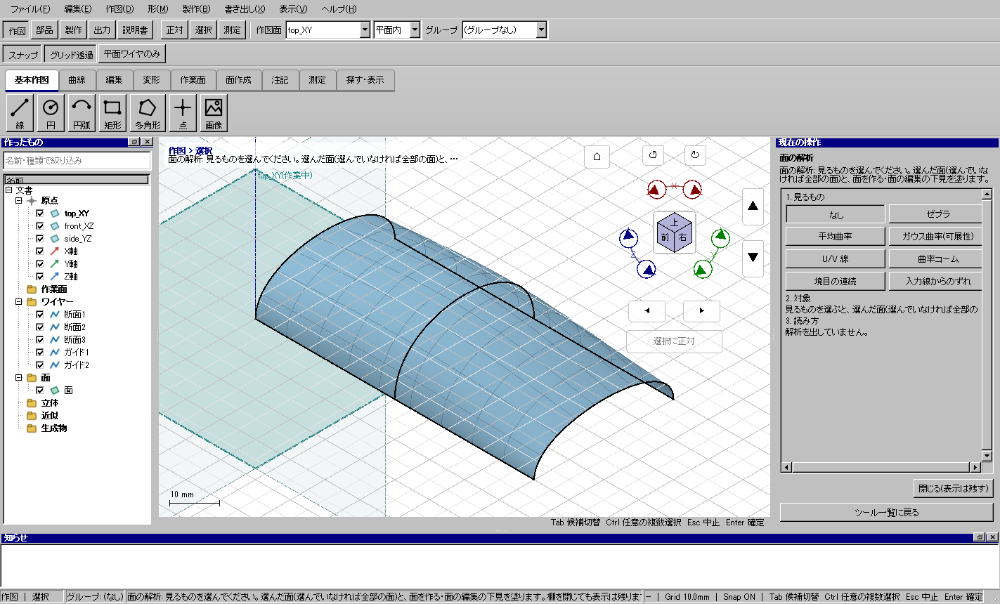
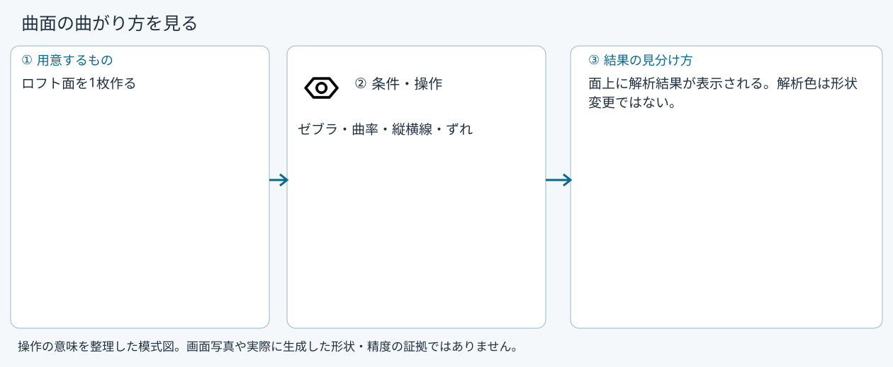

曲面の曲がり方を見る
曲面の曲がり方を見る
使う機能：面の解析
曲面の縦横、曲率、ずれなどを色や線で確認します。評価結果は形状そのものではありません。面がきれいに見えても数値精度を保証する判定とは違います。
面上に解析結果が表示される。解析色は形状変更ではない。
1 準備 — 元の図形から作る
ロフト面を1枚作る。
まだ用意できていなければ、次の手順を先に行ってください。既にモデルがある場合も、例の座標・大きさ・面の向きを自分のモデルへ読み替えます。
- 高さ違いの円2本から円筒状の面を作る — 図形の作成から順に練習できます。
練習前にKCD2を別名保存します。数値の長さはmm、角度は度です。平面内のu/vと世界XYZを区別します。
2 使う道具を開く — 押す場所
- 作図 → 面作成 → その他 → 面の解析
別の入口：Ctrl+K → 面の解析を検索 → 候補の用途を確認して開きます。別モードなら「全モードから探す」をオンにします。


この実画面は既存操作試験の一場面で、下の数値例の完成画像とは限りません。
3 操作手順 — 一つずつ進める
1 面を選ぶ
この段階で確認：この操作で使う入力：ロフト面を1枚作る
2 面の解析を開く
この段階で確認：使う対象・値：ゼブラ・曲率・縦横線・ずれ
3 解析の種類を切り替える
この段階で確認：面上に解析結果が表示される。解析色は形状変更ではない。
4 設定する欄と数値
ボタン名・欄名と、今回使う値を対応させてください。項目が出ていない場合は作り方・モードが合っているか確認し、ペイン内をスクロールします。
| 見る欄・役割 | この例の設定と意味 |
|---|---|
| 対象 | 面1枚 |
| 種類 | 解析ペインで切替 |
選択の確認：役割欄の名前と3Dの強調を照合します。重なって拾いにくい時はTabで候補を替えます。全体を使う例では左一覧の要素名を選び、3Dの1辺選択と区別します。

5 確定して結果を確認
表示の切替、または設定画面での適用を確認します。この機能の説明にない「形状の確定」は不要です。
面上に解析結果が表示される。解析色は形状変更ではない。
形を作る操作では、元と結果の名前を分けて一覧で確認し、必要に応じて元を一時非表示にします。表示だけの機能では形状や要素数を変えることが目的ではありません。
6 取消・やり直し・保存
表示を元のモードや設定へ戻します。カメラや可視状態を幾何のUndoと取り違えないでください。
モデルの編集正本はKCD2、説明書の編集正本はKCIです。外部へ出力するだけの機能では、出力ファイルと編集元を両方残してください。
進めない場合 — 症状から戻る場所を探す
| 起きていること | 確認して直す場所 |
|---|---|
| 色が出ない | 面を選び直し、解析の種類と表示を確認 |
| 修正したい | 解析を見て面の生成条件へ戻る |
この機能の入力条件：ゼブラ・平均曲率・ガウス曲率(可展性)・U/V 線・曲率コーム・境目の連続・入力線からのずれで
計算中は処理表示を見ます。失敗が出たら、対象・入力条件を変えずに何度も押すのでなく、案内にある対象と条件を確認します。
参考画面の出典と確認範囲
試験名：HP-RS-02 正本と見比べる場面(01〜10 とおまかせ・面の解析)がどれも作れる。試験全体の結果：passed。画像はコマンド呼出し直後で、入力待ち・下見の場合もあります。各段階の完成証拠ではありません。